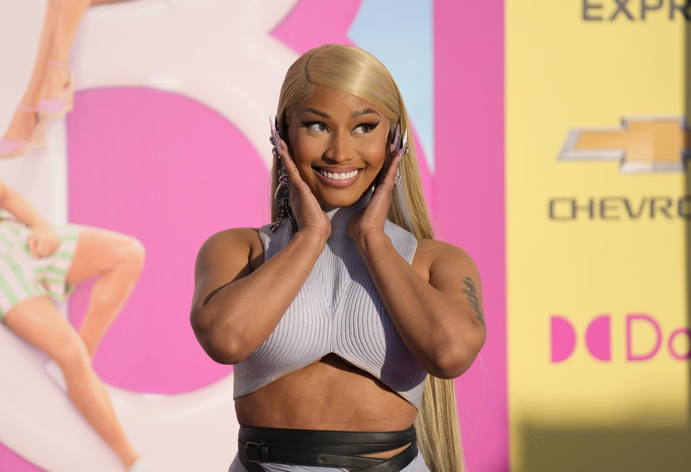
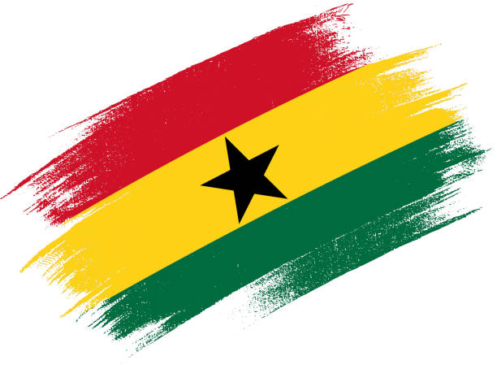
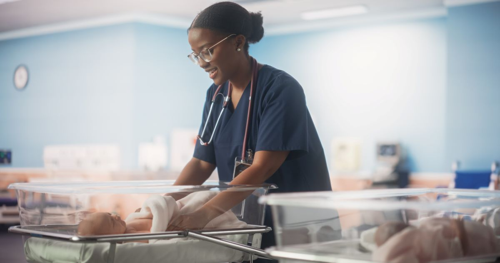
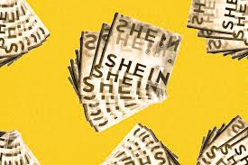

I love Nicki Minaj, my favorite song from her is Barbie Tingz and Red Ruby Da Sleeze. Nicki made me to become confident in myself. I love pink, and everything girly. I am Ghanian-American, my favorite thing about my country is the people, food, music, and the celebrations we throw such as, weddings, or random parties. My favorite afrobeat songs are, Charm by Rema, Beautiful by Ruff N Smooth, etc (I love old school Ghana music). My favorite app to go on is pinterest because it has so many cute ideas you can find.
 My dream is to become a Registered Travel NICU Nurse. I've always thought about being a nurse since I was 4 years old. I love helping people especially children and babies and making sure they're healthy and good. I want to work with pre-mature babies because I want to take care of them and making sure they grow strong and healthy.
I love shopping especially online shopping. My favoirte online clothing is Shein and fashion nova. They have so many cute clothes like dresses, jeans, tops, and cute accessories.adorable like omg.
